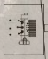
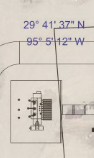
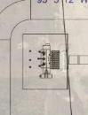
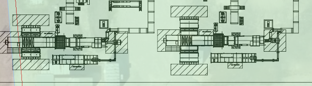
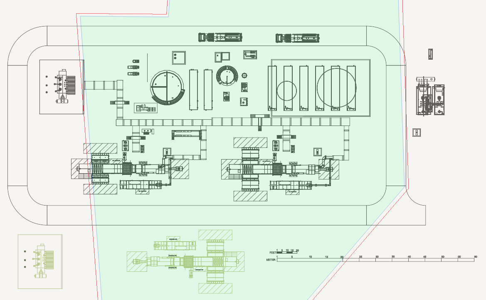
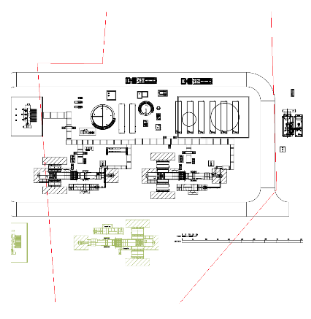
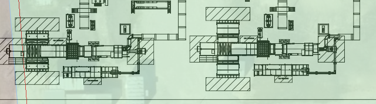
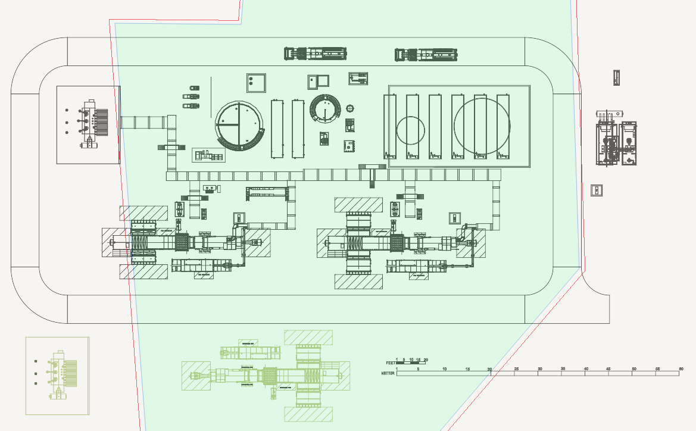
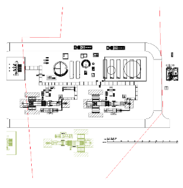

import os
import sys
import module_CreateProject
import module_DeleteProject
import module_CreatePolygonInTexas
import module_CommonImagesSet
import module_PublishDrawing
import module_ReopenSavedProject
nameOfProject = "Test Reference PDF Upload"
if(1):
# First delete existing project if any.
module_DeleteProject.deleteProject(nameOfProject)
# Create new project.
module_CreateProject.createProjectForPDFWorkflow(nameOfProject)
# Wait for Bingmap to load.
module_CommonImagesSet.waitForBingMapActivation()
# delete a default Pushpin.
module_CommonImagesSet.deleteDefaultPushPin(module_CommonImagesSet.defualtPushpinOnIndia.targetOffset(0,0))
# Go to a location near Texas.
module_CommonImagesSet.goToLocation("{29.693109, -95.085302}")
# Switch to Arial Mode.
module_CommonImagesSet.switchToArialView()
# Upload a sample file.
# A. get the sample file path.
commonImagePath = module_CommonImagesSet.mapTypeRoadImage.getFilename()
commonDirectoryPath = os.path.dirname(commonImagePath)
referencePDF = commonDirectoryPath + "\ReferencePDF.PDF"
Debug.log(referencePDF)
# B. Type the path in File Open Dialog hit enter.
click(module_CommonImagesSet.chooseFileButton)
wait(1)
type(referencePDF + Key.ENTER)
# Upload is done. Go to Forge.
module_CommonImagesSet.waitForForgeActivation()
module_CommonImagesSet.clickOnMapModelSlider()
wait(3)
success = True
if not exists (module_CommonImagesSet.predixCalibrationRequiredDialog):
success = False
Debug.log("ERROR: PDF calibration dialog has not appeared.")
click(module_CommonImagesSet.cancelOkayButton)
if not exists (module_CommonImagesSet.forgeCalibrateNowDialog, 5):
success = False
Debug.log("ERROR: Forge calibration dialog has not appeared.")
click(module_CommonImagesSet.forgeCalibrateNowDialog.targetOffset(97,61))
module_CommonImagesSet.fitToView()
# Calibrate now
match = find(Pattern().targetOffset(1,0))
click(match.getTarget().offset(-55, -22)) # road left end
click(match.getTarget().offset(-35, -22)) # road right end
wait(0.5)
# Calibration dialog. Set 6 meters.
match = find(Pattern().targetOffset(1,0))
click(match.getTarget().offset(105, -90)) # click on define size field.
wait(0.5)
type("6")
click(match.getTarget().offset(0, -53)) # click on unit type dropdown.
wait(0.5)
click(match.getTarget().offset(0, -12)) # click on metres.
wait(0.5)
click(match.getTarget())
wait(1)
# Unlock map and move model on appropriate position.
match = find(module_CommonImagesSet.lockButtonToChangeMapView)
click(match)
referencePosition = find(Pattern().targetOffset(1,0)).getTarget()
dragDrop(referencePosition.offset(7, -51) , referencePosition.offset(-210, 8))
# Lock the map with forge PDF again.
click(match)
# Permit to make the positional changes.
click(module_CommonImagesSet.chromeOkCancelDialog)
newReferencePosition = find(Pattern().targetOffset(1,0))
# Now draw the plygon.
click(Pattern( ).targetOffset(1,0))
click(newReferencePosition.offset(53, 371))
click(newReferencePosition.offset(19, -78))
click(newReferencePosition.offset(125, -77))
click(newReferencePosition.offset(136, -220))
click(newReferencePosition.offset(398, -210))
click(newReferencePosition.offset(409, 128))
click(newReferencePosition.offset(206, 365))
type(Key.ESC)
click(Pattern().targetOffset(1,0))
wait(3)
# Carbon should show map view now.
# switch back to forge again and check if everything is fine.
module_CommonImagesSet.waitForForgeActivation()
module_CommonImagesSet.clickOnMapModelSlider()
if not exists(Pattern().similar(0.35)):
Debug.log("Something went wrong in Forge View")
#module_DeleteProject.deleteProject(nameOfProject)
# drag drop few components.
dropTargetLocationMatch = find(module_CommonImagesSet.dropLocationAboveCamera)
dropLocation = dropTargetLocationMatch.getTarget().offset(0,-142)
# Drag drop a TM2500 PULSE ANTI ICING FILTER component
module_CommonImagesSet.dragDropComponentToLocation("TM2500 PULSE ANTI ICING FILTER", module_CommonImagesSet.TM2500_PULSE_ANTI_ICING_FILTER, dropLocation)
module_CommonImagesSet.dragDropComponentToLocation("GENERATOR STEP UP TRANSFORMER WITH FIREWALL", module_CommonImagesSet.GENERATOR_STEP_UP_TRANSFORMER_WITH_FIREWALL, dropLocation.offset(-350, 0))
wait(1)
module_CommonImagesSet.fitToView()
# Light Save the project.
module_CommonImagesSet.clickOnLightSave()
# close the project.
module_CommonImagesSet.closeProject()
wait(1)
afterReloadModel = Pattern().targetOffset(1,0)
saveThumbnail = Pattern().targetOffset(1,0)
saveComplete = module_ReopenSavedProject.reopenSavedProject(nameOfProject, "v1.1", saveThumbnail, True);
if saveComplete:
Debug.log("INFO: Save is compelete")
# check the forge view
if module_CommonImagesSet.waitForForgeActivation():
module_CommonImagesSet.clickOnMapModelSlider()
if not exists(afterReloadModel, 5):
Debug.log("ERROR: Unexpected scene after reopen")
success = False
else:
Debug.log("ERROR: Forge is not active")
success = False
else:
Debug.log("SAVE FAILED!!")
success = False
# close the project.
module_CommonImagesSet.closeProject()
wait(1)
# Delete Project.
# module_DeleteProject.deleteProject(nameOfProject)
if success:
Debug.log("TEST PASSED!!")
else:
Debug.log("TEST FAILED!!")
).targetOffset(1,0))
click(newReferencePosition.offset(53, 371))
click(newReferencePosition.offset(19, -78))
click(newReferencePosition.offset(125, -77))
click(newReferencePosition.offset(136, -220))
click(newReferencePosition.offset(398, -210))
click(newReferencePosition.offset(409, 128))
click(newReferencePosition.offset(206, 365))
type(Key.ESC)
click(Pattern().targetOffset(1,0))
wait(3)
# Carbon should show map view now.
# switch back to forge again and check if everything is fine.
module_CommonImagesSet.waitForForgeActivation()
module_CommonImagesSet.clickOnMapModelSlider()
if not exists(Pattern().similar(0.35)):
Debug.log("Something went wrong in Forge View")
#module_DeleteProject.deleteProject(nameOfProject)
# drag drop few components.
dropTargetLocationMatch = find(module_CommonImagesSet.dropLocationAboveCamera)
dropLocation = dropTargetLocationMatch.getTarget().offset(0,-142)
# Drag drop a TM2500 PULSE ANTI ICING FILTER component
module_CommonImagesSet.dragDropComponentToLocation("TM2500 PULSE ANTI ICING FILTER", module_CommonImagesSet.TM2500_PULSE_ANTI_ICING_FILTER, dropLocation)
module_CommonImagesSet.dragDropComponentToLocation("GENERATOR STEP UP TRANSFORMER WITH FIREWALL", module_CommonImagesSet.GENERATOR_STEP_UP_TRANSFORMER_WITH_FIREWALL, dropLocation.offset(-350, 0))
wait(1)
module_CommonImagesSet.fitToView()
# Light Save the project.
module_CommonImagesSet.clickOnLightSave()
# close the project.
module_CommonImagesSet.closeProject()
wait(1)
afterReloadModel = Pattern().targetOffset(1,0)
saveThumbnail = Pattern().targetOffset(1,0)
saveComplete = module_ReopenSavedProject.reopenSavedProject(nameOfProject, "v1.1", saveThumbnail, True);
if saveComplete:
Debug.log("INFO: Save is compelete")
# check the forge view
if module_CommonImagesSet.waitForForgeActivation():
module_CommonImagesSet.clickOnMapModelSlider()
if not exists(afterReloadModel, 5):
Debug.log("ERROR: Unexpected scene after reopen")
success = False
else:
Debug.log("ERROR: Forge is not active")
success = False
else:
Debug.log("SAVE FAILED!!")
success = False
# close the project.
module_CommonImagesSet.closeProject()
wait(1)
# Delete Project.
# module_DeleteProject.deleteProject(nameOfProject)
if success:
Debug.log("TEST PASSED!!")
else:
Debug.log("TEST FAILED!!")